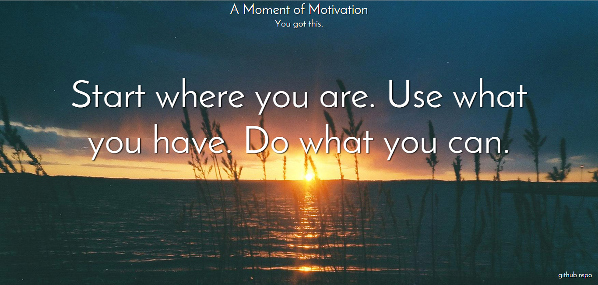
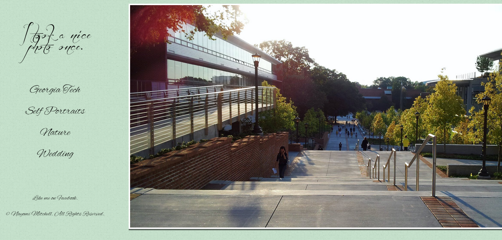
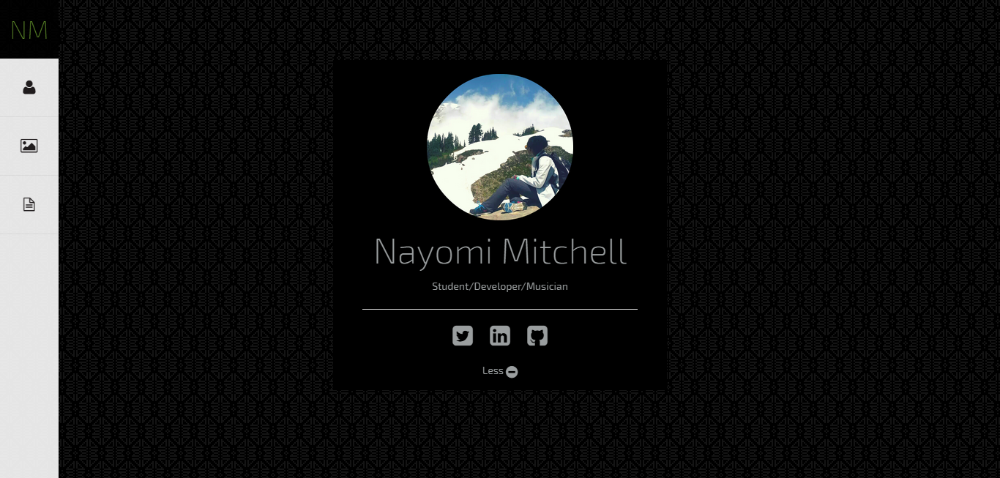
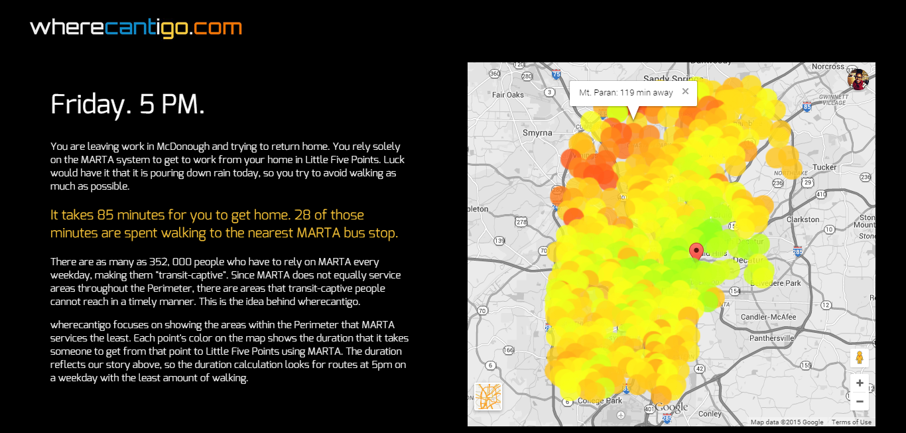
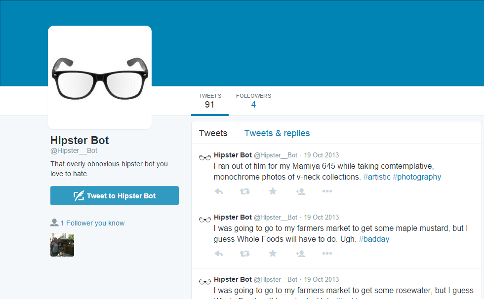

A Moment of Motivation
A Moment of Motivation provides a window to another world, along with some encouragement to keep you on your way. Sometimes, we all just need a break.
This project was made with HTML5/CSS3/JS. Additionally, I used the Flickr API for photos and the 8tracks API for, well, the music.
View

Ten Solid Layouts
This is my interpretation of the layouts from this article. I had a lot of fun with coming up with topics for each website.
These websites were made with HTML5/CSS3/JS.
View

The Old nayomi.me
I change my portfolio quite frequently. I think that it's fun to change up once in a while to improve my skills. This is my more-flashy previous portfolio. It was also my first try at responsive design.
This website was made with HTML5/CSS3/JS. I also got a bit of help from Foundation 5's grid system.
View

wherecantigo.com
Part class project, part campaign. wherecantigo highlights areas within the Perimeter that are not very well serviced by the MARTA system in Atlanta. Almost 500 data points were collected by hand and plotted on a Google Map to show how long a trip to Little Five Points would take.
This website was made with HTML5/CSS3/JS and the Google Maps JavaScript API v3. My resposibilities for this project were collecting data and creating a website to display the data.
View
Down The Rabbit Hole
This is a Gameboy Advance game that I made for class. It's based on one of my favorite game series, American McGee's Alice. The objective is to collect the bottles in each of the 3 levels. The levels get more difficult, of course. The bottles may appear to hard-to-reach locations, which is why Alice must use the "rabbit holes" (or rather, the gaps in the ground) to fall through the screen and get to those places.
I made this game in C.
Github Repo

hipsterbot
"I only eat the most organic quinoa. Anything else is trash. #healthy #organic"
I essentially made a really obnoxious hipster. That person who can't stand Starbucks as it's too mainstream. Or dislikes a pretty good band because they "sold out". You may not know someone like this, but this hipster trend seems to everywhere in our media. Silly trends like "hipster glasses" have shown up on the faces of celebrities and now our faces as well. Ironically, I even wear them. Or am I just wearing them ironically?
While standing back and looking at the definition of a hipster, it's easy to see that the whole fad is ridiculous. I made this bot to satire this fad. It asks thoughtful questions such as "Does anyone know if I can compost my flannel shirt?" and will insult you if you do not who the band "High-res Bachelor" is. As a bonus, it also looks for tweets where people mention that they are hipsters, and tells them that they aren't.
This bot uses Node.js to run at certain intervals and uses the Wordnik API to pull random words for tweets.
Github Repo
nayomi.me
It's like we're coming full circle. This is the page that you're on right now. This is actually my first time making a responsive website without any pre-made grid systems.
nayomi.me was made with HTML5/CSS3/JS.
Github Repo